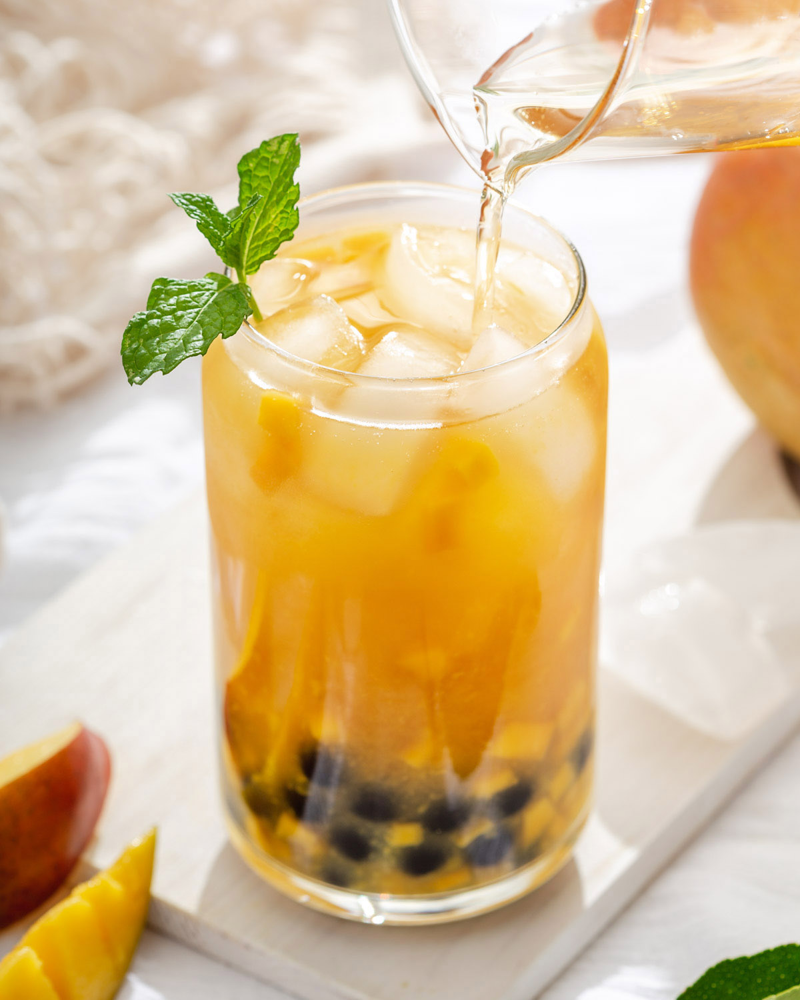
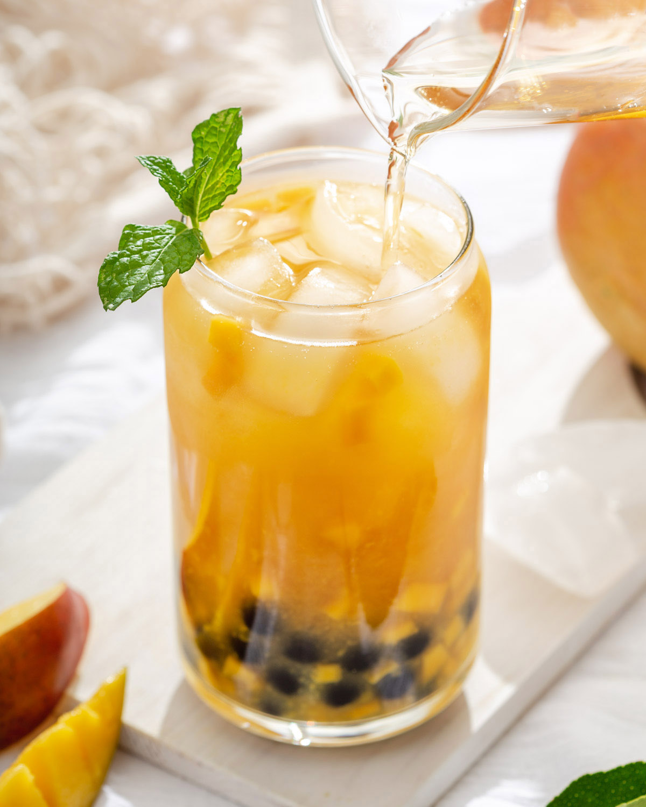

What is Boba?
Traditional milk boba tea is served with tapioca balls, which are made of starch and are commonly referred to as pearls.The drink is usually a combination of milk, water, tea and sugar, yet has a lot of variations. Boba tea is available in both hot and cold versions. It is typically served in a wide mouth plastic cup and sealed shut with a clear plastic wrap. (See picture above for reference) Traditional boba pearls are found at the bottom of a cup, and are very chewy. Their consistency is similar to a mix of chewing gum and jell-o (don’t worry, no gelatin included), and can be enjoyed at all times of the day. Most tapioca pearls are black, but there are also versions that are white and some transparent.
MISSION
The purpose of this website is to provide a general guide to boba drinks in the Bay Area/San Jose area. You should not treat this as a completely comprehensive guide, as it is solely based on my personal experiences and tastes. Additionally, everyone has different preferences, so my best recommendation would be to experiment with flavors and shops to find out what you like most. However, for people new to boba or popular stores in the Bay Area, this collection may prove to be helpful starting point to begin your boba-tasting journey.
ABOUT ME
My name is Brian Ling. Currently, I am a freshman at the University of Pennsylvania majoring in Computer Science. However, I'm also a very big fan of boba, which inspired me to make this website. I've tried dozens of boba shops around San Jose over the years, and this is a compilation of my experiences.